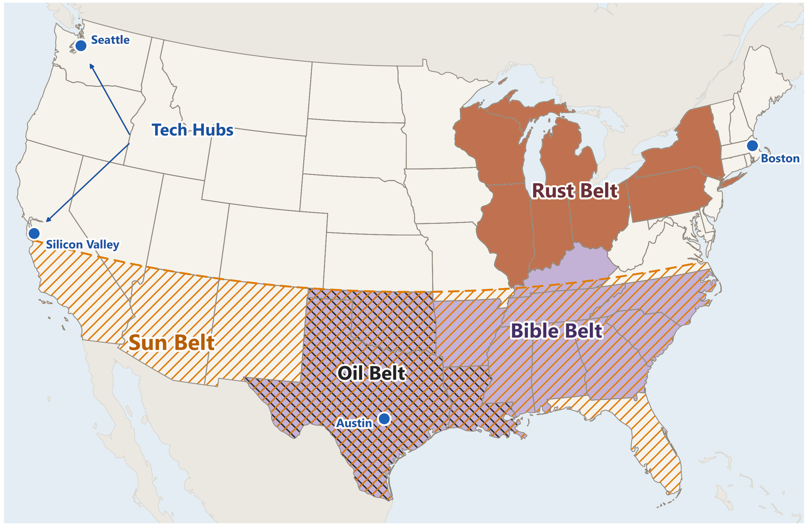
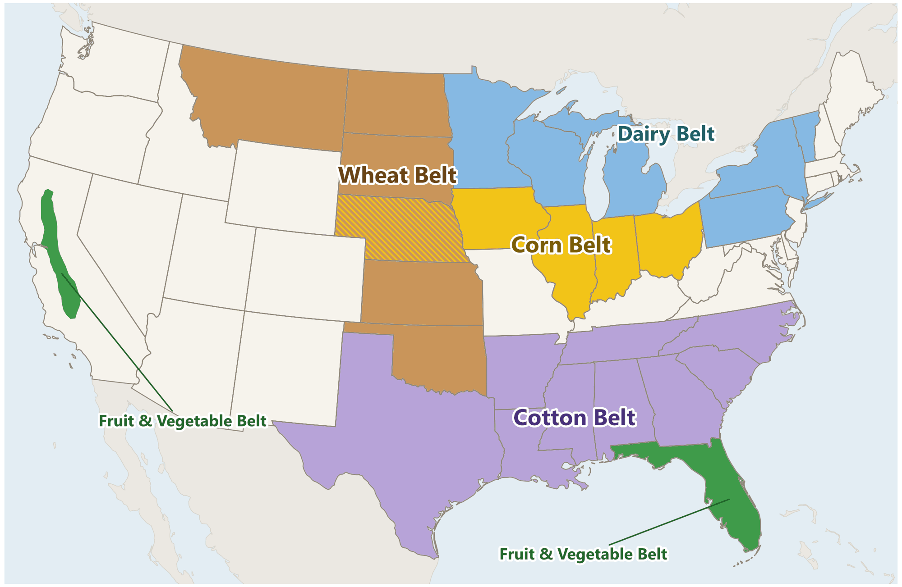
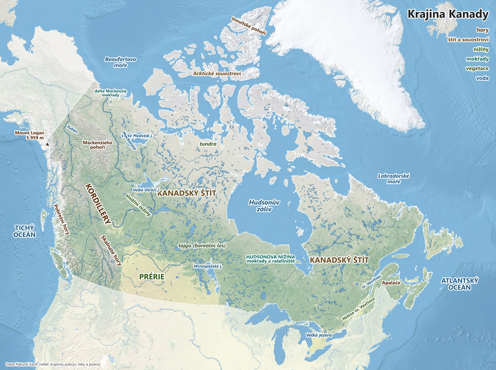
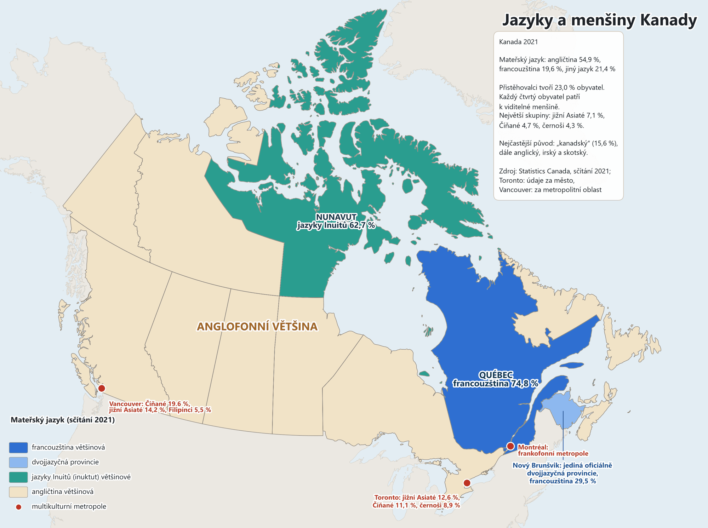

USA & Canada
Dvě sousední země, jedna z nejdelších hranic na světě a jeden propojený hospodářský prostor. Příroda, obyvatelstvo, ekonomika a dohody NAFTA a USMCA.
Otevřít mapuČásti webu
Mapa, podrobnosti k maturitě a procvičování.
Interaktivní mapa
Klikni na stát nebo provincii a zobrazí se informace i fotografie.
02Rozšířené informace
Politický systém, hospodářské a zemědělské pásy, Québec, jazyky Kanady, ropné písky a historie NAFTA.
03Mapy a grafy
Klikací mapy podnebí, zemědělství, hospodářských pásů, surovin a hustoty, časová osa a grafy.
04Kvízy
USA, Kanada, NAFTA, poznávačka na mapě a komplexní maturitní test.
05Maturitní příprava
Pojmy, slovníček, možné otázky, shrnutí kapitol a kartičky s ukládáním postupu.
06Prezentace
USA, Kanada a NAFTA v 33 snímcích, k prohlížení i ke stažení v PDF.
07Novinky
Aktuální zprávy o USA, Kanadě a USMCA, automaticky obnovované.
Mapy k výkladu
Obrazové mapy z ověřených dat. Hodí se do prezentace i k opakování.

Hospodářské pásy USARust Belt, Sun Belt, Oil Belt, Bible Belt, Tech Hubs
Zemědělské pásy USACorn, Wheat, Cotton, Dairy a Fruit & Vegetable Belt
Krajina KanadyKordillery, Kanadský štít, Prérie, tundra a tajga
Jazyky a menšiny KanadyFrankofonní Québec, Nunavut, multikulturní metropole